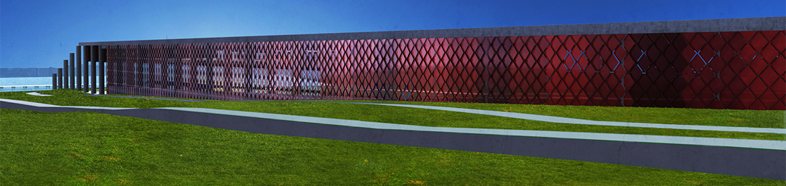
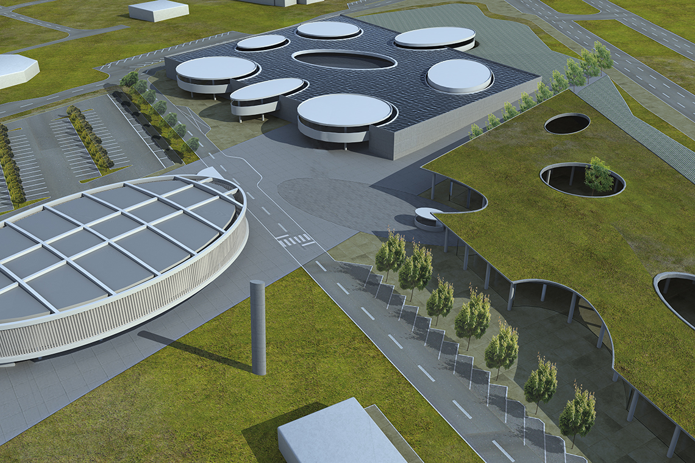
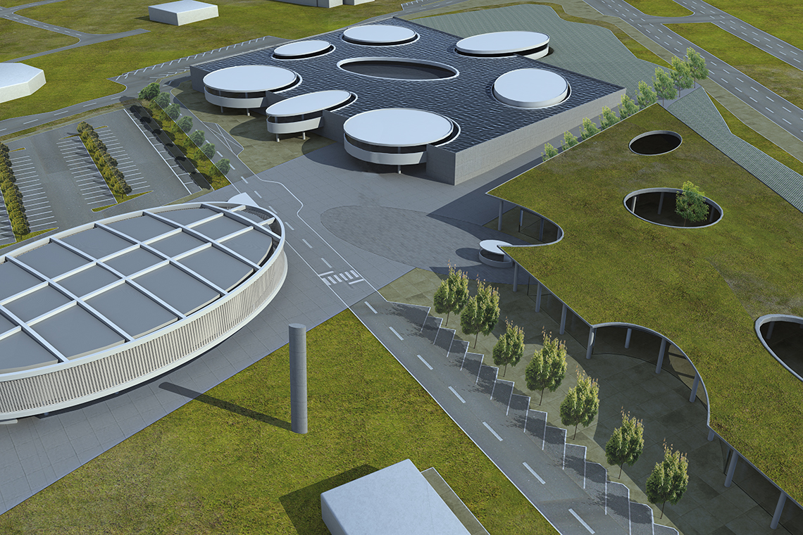
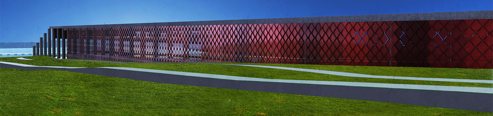
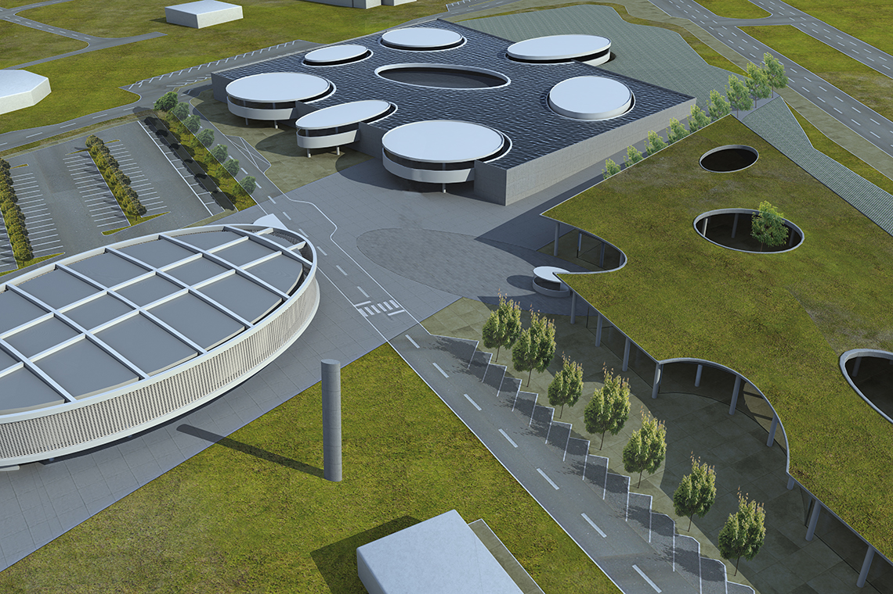

- Studio: None
- Type: Rendering
- Roles: 3D Renderer/Artist
- Year: 2011-2018
Renderings done for school projects and self study. Using tools as, Autodesk Maya/3ds Max/SketchUp + mentalRay/VRay + Photoshop.
 

Renderings done for school projects and self study. Using tools as, Autodesk Maya/3ds Max/SketchUp + mentalRay/VRay + Photoshop.

